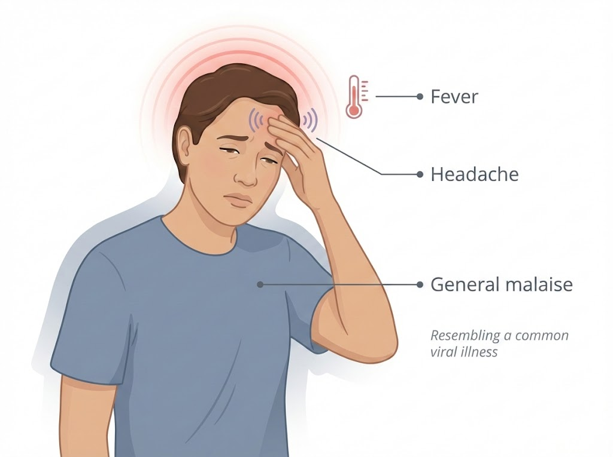
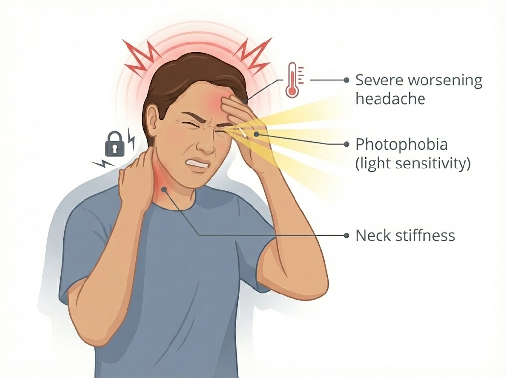

This represents your baseline belief about the likelihood of meningitis before considering any specific symptoms. It might be based on local prevalence, patient demographics, or clinical intuition.
The LR+ tells you how many times more likely this finding is in a patient with meningitis than without. LR+ ≈ 1 = no real diagnostic value; higher numbers = stronger evidence.


P(Meningitis|Evidence) = P(Evidence|Meningitis) × P(Meningitis) / P(Evidence)